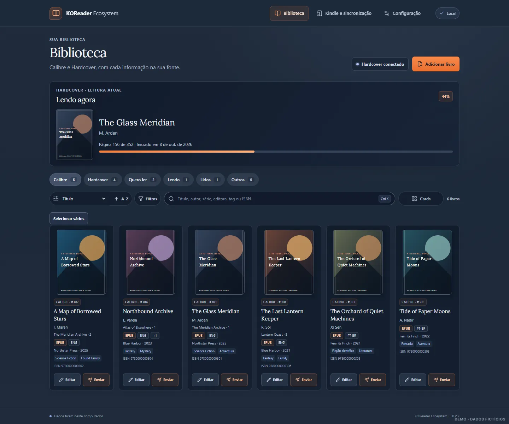

Calibre
Consulte sua biblioteca local e edite metadados compatíveis.
Um aplicativo para Windows que aproxima sua biblioteca Calibre, o Kindle e o KOReader das suas plataformas de leitura.
Código aberto · Windows x64 · Projeto em estágio inicial

Seus livros já têm uma casa. Veja por onde eles podem viajar.
Consulte sua biblioteca local e edite metadados compatíveis.
Envie um ebook ao Kindle por USB, com confirmação e backup anterior.
Um plugin separado do KOReader envia o progresso de leitura ao Hardcover por Wi-Fi.
Revise importações CSV do Goodreads, StoryGraph e Maratona. A exportação é compatível com o Goodreads. Ainda não há sincronização direta com esses serviços.
Busque, filtre e revise sua coleção em um só lugar. Os arquivos continuam na sua biblioteca Calibre.
GitHubTransferências individuais para Kindle foram testadas. O ciclo completo KOReader–Hardcover, transferências em lote e recuperação de sidecars ainda precisam de validação em dispositivo. O instalador para Windows não é assinado.
Não para consultar e organizar sua biblioteca Calibre. Os recursos do Hardcover precisam de uma conta.
Ainda não diretamente. Há importação revisável por arquivos CSV para ambos.
Os livros continuam na biblioteca Calibre no seu computador.
Sim. O KOReader Ecosystem é open source sob licença MIT.
Teste o aplicativo, conte o que encontrou ou contribua com código, documentação e acessibilidade.